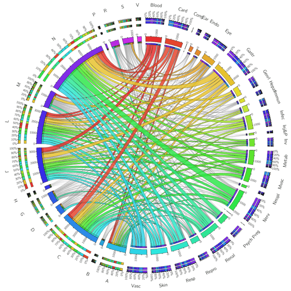
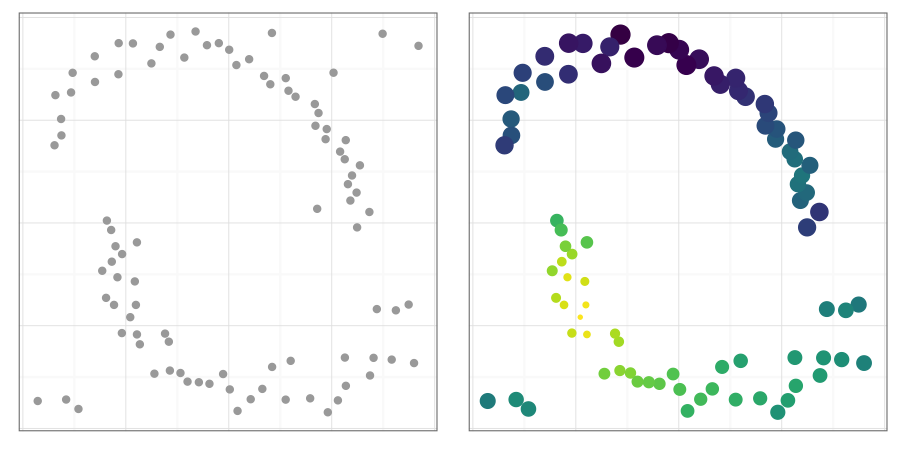
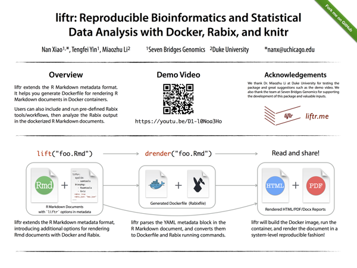

Nan Xiao
R Developer
Data Science Practitioner
Machine Learning Researcher

Preprints
hdnom: Building Nomograms for Penalized Cox Models with High-Dimensional Survival Data
Abstract:
Summary: We developed hdnom, an R package for survival modeling with high-dimensional data. The package is the first free and open-source software package that streamlines the workflow of penalized Cox model building, validation, calibration, comparison, and nomogram visualization, with nine types of penalized Cox regression methods fully supported. A web application and an online prediction tool maker are offered to enhance interactivity and flexibility in high-dimensional survival analysis.
Availability: The hdnom R package is available from CRAN: https://cran.r-project.org/package=hdnom under GPL. The hdnom web application can be accessed at http://hdnom.io. The web application maker is available from https://hdnom.org/appmaker. The hdnom project website: https://hdnom.org.
Journal Papers
Multi-Step Adaptive Elastic-Net: Reducing false positives in high-dimensional variable selection

Abstract: Regression and variable selection in high-dimensional settings, especially when p >> n has been a popular research topic in statistical machine learning. In recent years, many successful methods have been developed to tackle this problem. In this paper, we propose the multi-step adaptive elastic-net (MSA-Enet), a multi-step estimation algorithm built upon adaptive elastic-net regularization. The numerical study on simulation data and real-world biological datasets have shown that the MSA-Enet method tends to significantly reduce the number of false-positive variables, while still maintain the estimation accuracy. By analyzing the variables eliminated in each step, more insight could be gained about the structure of the correlated variable groups. These properties are desirable in many real-world variable selection and regression problems.
protr/ProtrWeb: R package and web server for generating various numerical representation schemes of protein sequence

Abstract: Amino acid sequence-derived structural and physiochemical descriptors are extensively utilized for the research of structural, functional, expression and interaction profiles of proteins and peptides. We developed protr, a comprehensive R package for generating various numerical representation schemes of proteins and peptides from amino acid sequence. The package calculates eight descriptor groups composed of twenty two types of commonly used descriptors that include about 22,700 descriptor values. It allows users to select amino acid properties from the AAindex database, and use self-defined properties to construct customized descriptors. For proteochemometric modeling, it calculates six types of scales-based descriptors derived by various dimensionality reduction methods. The protr package also integrates the functionality of similarity score computation derived by protein sequence alignment and Gene Ontology (GO) semantic similarity measures within a list of proteins, and calculates profile-based protein features based on position-specific scoring matrix (PSSM). We also developed ProtrWeb, a user-friendly web server for calculating descriptors presented in the protr package. The protr package is freely available from CRAN (link). ProtrWeb is freely available at this link.
Rcpi: R/Bioconductor package to generate various descriptors of proteins, compounds, and their interactions
D.-S. Cao*,

Abstract: In chemoinformatics and bioinformatics fields, one of the main computational challenges in various predictive modeling is to find a suitable way to effectively represent the molecules under investigation such as small molecules, proteins and even complex interactions. To solve this problem, we developed a freely available R/Bioconductor package, called Compound-Protein Interaction with R (Rcpi), for complex molecular representation from drugs, proteins and more complex interactions including protein-protein and compound-protein interactions. Rcpi could calculate a large number of structural and physicochemical features of proteins and peptides from amino acid sequences, molecular descriptors of small molecules from their topology, and protein-protein interaction and compound-protein interaction descriptors. In addition to main functionalities, Rcpi could also provide a number of useful auxiliary utilities to facilitate the user's need. With the descriptors calculated by this package, the users could conveniently apply various statistical machine learning methods in R to solve various biological and drug research questions in computational biology and drug discovery. Rcpi is freely available from the Bioconductor website (link).
Integrating Multiple Evidence Sources to Predict Adverse Drug Reactions Based on Systems Pharmacology Model
D.-S. Cao,

Abstract: Identifying potential adverse drug reactions (ADRs) is critically important for drug discovery and public health. Here we developed a multiple evidence fusion (MEF) method for the large-scale prediction of drug ADRs that can handle both approved drugs and novel molecules. MEF is based on the similarity reference by collaborative filtering, and integrates multiple similarity measures from various data types, taking advantage of the complementarity in the data. We used MEF to integrate drug-related and ADR-related data from multiple levels, including the network structural data formed by known drug–ADR relationships for predicting likely unknown ADRs. On cross-validation, it obtains high sensitivity and specificity, substantially outperforming existing methods that utilize single or a few data types. We validated our prediction by their overlap with drug–ADR associations that are known in databases. The proposed computational method could be used for complementary hypothesis generation and rapid analysis of potential drug–ADR interactions.
In silico Evaluation of logD7.4 and Comparison with Other Prediction Methods
J.-B. Wang, D.-S. Cao, M.-F. Zhu, Y.-H. Yun,

Abstract: Lipophilicity, evaluated by either n-octanol/water partition coefficient (logP) or n-octanol/buffer solution distribution coefficient (logD), is of high importance in pharmacology, toxicology and medicinal chemistry. A quantitative structure-property relationship (QSPR) study was carried out for the prediction of distribution coefficients at pH 7.4 (logD7.4) of a large data set consisting of 1,130 organic compounds with 30 molecular descriptors selected by genetic algorithm (GA). Partial least squares (PLS) and support vector machine (SVM) regression were used to build prediction models with 904 molecules as the training set, and the predictive ability was evaluated with 226 molecules as the external test set. The results exhibited by the regression statistics demonstrate that the SVM model is more reliable and has a better predictive accuracy than the PLS model. The square correlation coefficients of fitting, cross validation and prediction are 0.92, 0.90 and 0.90, respectively. The corresponding root mean square errors are 0.52, 0.59 and 0.56, respectively. The reliability and generalization ability of the model were assessed by applicability domain and Y-randomization test, and 30 selected molecular descriptors could give a reliable and direct interpretation to logD7.4 to some extent. When compared with the logD7.4 values calculated by five methods from Discovery Studio and ChemAxon, our SVM model shows superiority over them. The results indicate that our model is a reliable and promising method to evaluate logD7.4.
A novel local manifold-ranking based k-NN for modeling the regression between bioactivity and molecular descriptors
L. Shen, D.-S. Cao, Q.-S. Xu, X. Huang,

Conference Posters
liftr: Reproducible Bioinformatics and Statistical Data Analysis with Docker, Rabix, and knitr

Abstract: liftr extends the R Markdown metadata format. It helps you generate Dockerfile for rendering R Markdown documents in Docker containers. Users can also include and run pre-defined Rabix tools/workflows, then analyze the Rabix output in the dockerized R Markdown documents.
https://www.bioconductor.org/help/course-materials/2015/BioC2015/